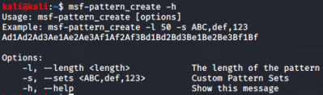
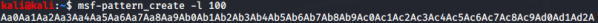
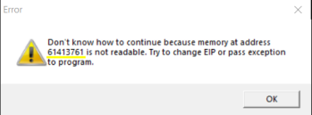
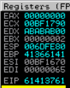
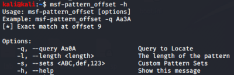
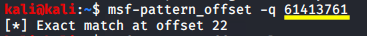

Ruby scripts (pattern_create.rb & pattern_offset.rb)
Ruby scripts
To make this task of find the offset more easier we can use some scripts like:
1.
pattern_create.rb: Ruby
script to
create the payload long as the number we specify (big number preferably).
◇ on
Linux this script is pre-installed with metasploit in the folder /usr/share/metasploit-framework/tools/exploit

msf-pattern_create -l 100
3. We start to
debug the application, for example with Immunity Debugger, and we use
the pattern created by
pattern_create.rb as argument
(payload).
We have to run the application and once that is crashed we have to annotate which is the
EIP address with an access violation(overwritten).
EIP is been overwritten
because we have used a random big number(100)
 6.
pattern_offset.rb : Ruby
script to which we have to input the
EIP address found. This script will give us
the exact number of junk Bytes(offset) that we need to reach the
EIP but not
overwrite it.

msf-pattern_offset -q 61413761
 Return 22 that is is the
offset to overwrite both the
data and
EBP
but not
EIP